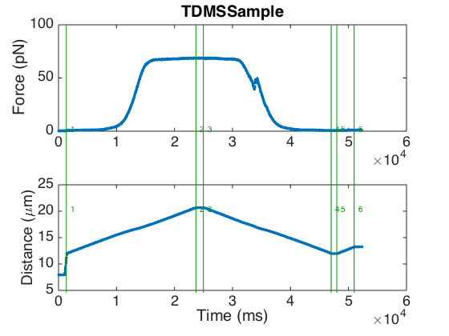
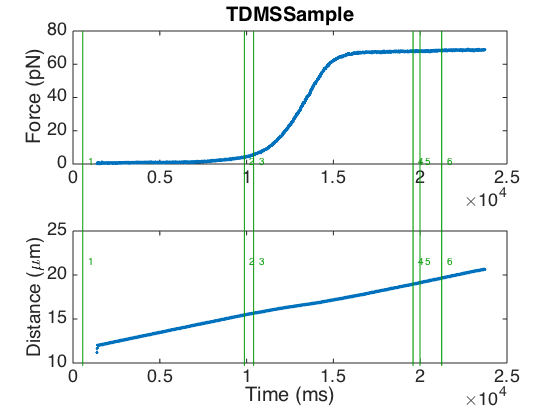

ANALYZING LUMICKS DATA
This document describes how to load, process, and analyze data that is produced by the TWOM/Lumicks LabVIEW software (this is the software that was used to measure the raw data from the paper). I will assume you have already read the "Tutorial", and familiarized yourself with the basic functions of the FDFIT package.
Contents
Loading Data From TDMS Files
TWOM/Lumicks software stores the measured data in LabVIEW TDMS files. TDMS is a file format specific to LabVIEW, but fortunately, it can easily be imported into MATLAB. We'll use the readtdmsfile function for that:
fd = readtdmsfile('Doc/SampleData/TDMSSample.tdms', 'c1', 1);
This command loads Force Channel 1, Distance 1. The function will also automatically subtract the bead diameter, as found in the file's metadata.
If you want to load another force or distance channel, you can do so:
fd = readtdmsfile('Doc/SampleData/TDMSSample.tdms', 't2', 2);
This loads the total force on Trap 2, combined with Distance 2.
For data files made with older versions of TWOM, or in case the bead diameter as stored in the file is incorrect, you can also specify the bead diameter manually:
fd = readtdmsfile('Doc/SampleData/TDMSSample.tdms', 'c1', '1', 3.08); % bead diameter 3.08 um
If you'd rather pick a file by browsing, you can also do this:
fd = readtdmsfile();
Finally, please note that all metadata from the TDMS file is automatically imported, too. Just use the disp function with the 'full' argument to show it:
disp(fd, 'full');
[ FD DATA OBJECT ]
|--- Name: TDMSSample
|--- Metadata:
| |--- id : C0FE0590-2B23-4112-B078-AA679FC5B3A8
| |--- file : Doc/SampleData/TDMSSample.tdms
| |--- forceChannel : c1
| |--- distanceChannel : 1
| |--- originalFile : 20130903-134627 050Mg 500NaCl #004-001
| |--- dateTime : 735481
| |--- experiment : 050Mg 500NaCl
| |--- moleculeNo : 4
| |--- fileNo : 1
| |--- description :
| |--- beadDiameter : 3.05
| |--- distanceCalibration : 90.5
| |--- forceCalibration : -452.564
| |--- forceOffset : -0.146548
| |--- cornerFrequency : 1548.8
| |--- trapStiffness : 2.80293e+08
|--- Marks:
| |--- 1 @1378 : F,d curve: Start
| |--- 2 @23720 : F,d curve: End
| |--- 3 @24999 : F,d curve: Start
| |--- 4 @47040 : F,d curve: End
| |--- 5 @48000 : F,d curve: Start
| |--- 6 @50997 : F,d curve: End
|--- History
|--- shift(d, -3.05)
Using Data Marks
While performing measurements in the TWOM/Lumicks software, you can 'mark' time points of interest. Such data marks are also created automatically, for example when an F,d curve is created by the F,d Curve Plugin.
Data marks are also imported into the FdData object. You may, in fact, have already noticed them in the output of the disp command above. Each mark has a number, an associated time coordinate (in ms), and an optional description (or "comment").
We can visualize the location of the data marks in a plot of the F,d,t data:
plotfd(fd, 'style', 'fdt', 'showMarks');
Marks can also be used to make extraction of fragments of the data easier. In our example here, the data file contains three F,d Curves that were created with the software's F,d Curve Plugin; we can see the "start" and "end" data marks created by the plugin in the list of data marks.
If we'd like to extract the first F,d curve, we can use:
fdCurve = fd.betweenMarks(1, 2); plotfd(fdCurve, 'style', 'fdt');
This little feature can also be used to automate extraction of F,d curves from the raw data.